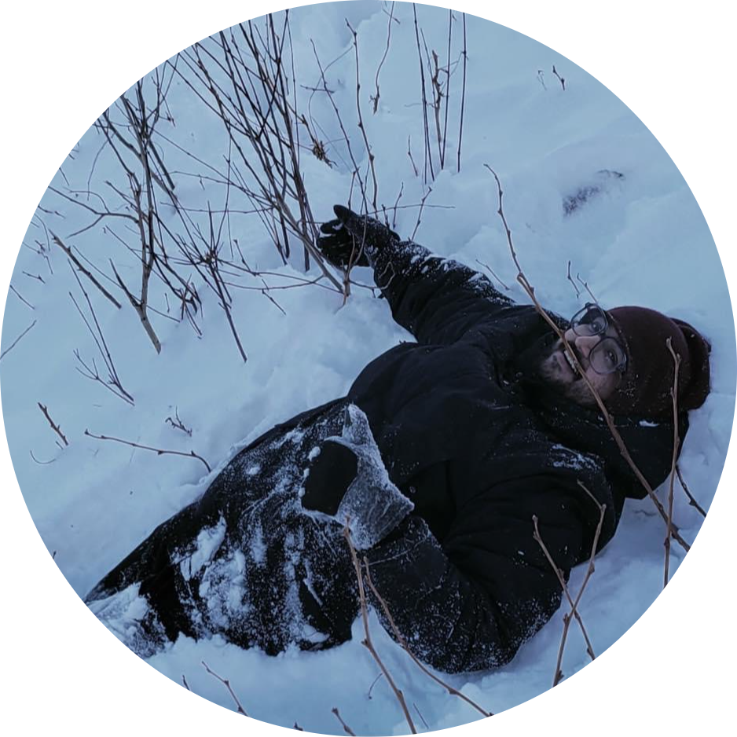
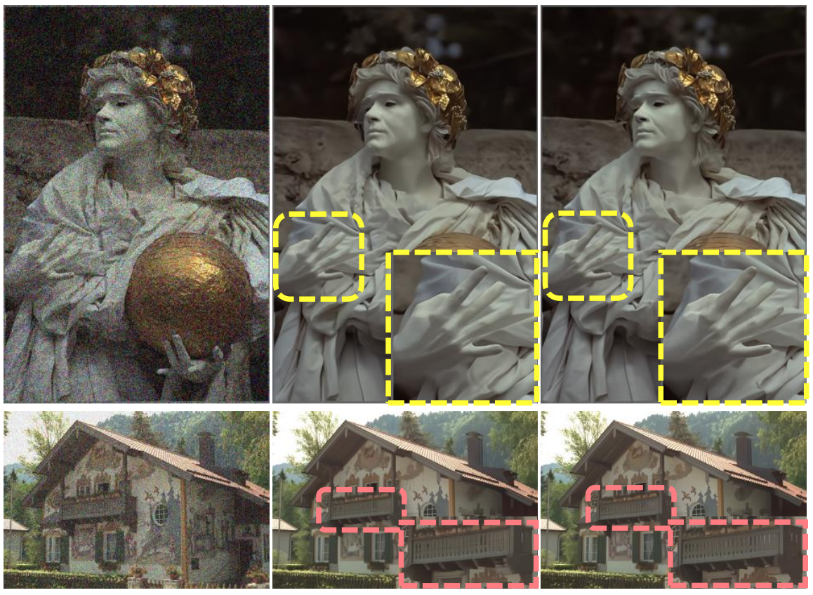
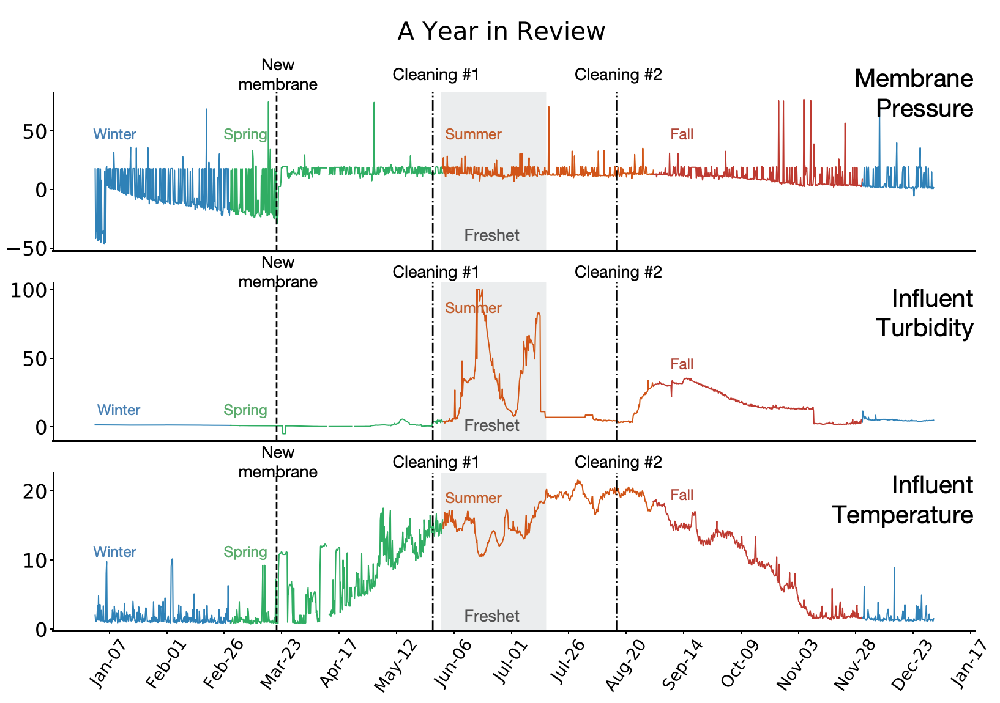
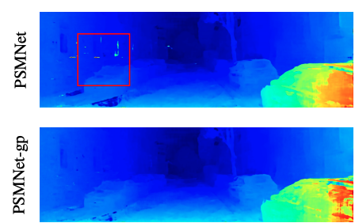
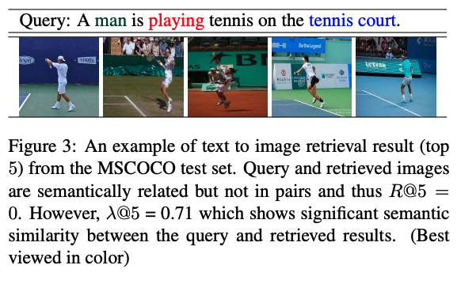
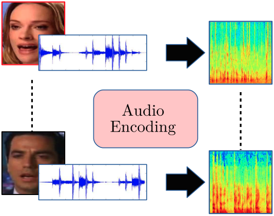
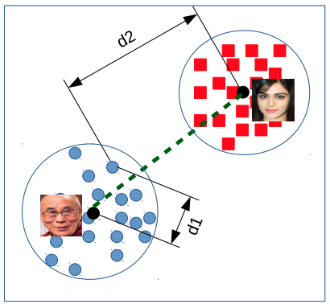

|
Muhammad Kamran Janjua
Art is Long; Time is Fleeting!
I am a Machine Learning Researcher @ Huawei, Canada working in Dr. Chao Gao's team, previously in Dr. Mohammad Salameh's team, at Edmonton Research Center.
Previously, I was a graduate student with Dr. Martha White at University of Alberta, where I worked on representation learning for reinforcement learning.
Particularly I worked at the combination of offline and online RL where the goal was to learn effective representations in the offline phase to warm-start
the agent in the online setting and make sure that the agent converges quickly.
Before that, I worked as a Research Associate at Qatar Computing Research Institute (QCRI) working on interpretability in neural language models. Specifically, I worked on understanding how neural language models build (if at all) grammatical structure of language internally.
I was supervised by Dr. Hassan Sajjad.
Before that I did my undergraduate from National University of Sciences & Technology (NUST), Islamabad working in TUKL-NUST R&D Lab working with Dr. Faisal Shafait.
Over the years in this pursuit of science, I have had the pleasure of visiting AaltoVision and AaltoML lab at Aalto University, Finland to work on estimating depth from stereo setups.
I have also worked as a research intern at ARTE Lab, University of Insubria back in 2018 where I worked on designing multi-modal neural networks. My research was supervised by Dr. Ignazio Gallo.
Fun Fact: My Erdős Number is 4.
Email /
CV /
Google Scholar /
Github
|

|
|
Research
I am interested in online, and continual learning from continuous streams of data (text/tabular/videos).
|
|

|
CascadedGaze: Efficiency in Global Context Extraction for Image Restoration
Amirhosein Ghasemabadi,
Muhammad Kamran Janjua,
Mohammad Salameh,
Chunhua Zhou,
Fengyu Sun,
Di Niu
Transactions on Machine Learning Research (TMLR), 2024
We present CascadedGaze Network (CGNet), an encoder-decoder architecture that employs Global Context Extractor (GCE), a novel and efficient way to learn global information for image restoration.
|
|

|
GVFs in the Real World: Making Predictions Online for Water Treatment
Muhammad Kamran Janjua,
Haseeb Shah,
Martha White,
Erfan Miahi,
Marlos C Machado,
Adam White
Machine Learning, 2023
We show the importance of learning in deployment, by comparing a TD agent trained purely offline with no online updating to a TD agent that learns online. This final result is one of the first to motivate the importance of adapting predictions in real-time, for non-stationary high-volume systems in the real world.
|
|

|
Movement-Induced Priors for Deep Stereo
Yuxin Hou,
Muhammad Kamran Janjua,
Juho Kannala,
Arno Solin
25th International Conference on Pattern Recognition (ICPR), 2020
We propose a method for fusing stereo disparity estimation with movement-induced prior information.
|
|

|
Do Cross Modal Systems Leverage Semantic Relationships?
Shah Nawaz,
Muhammad Kamran Janjua*,
Ignazio Gallo,
Arif Mahmood,
Alessandro Calefati,
Faisal Shafait
Proceedings of the IEEE/CVF International Conference on Computer Vision (ICCV), 2019
We propose a new measure SemanticMap to evaluate the performance of cross modal systems. Our proposed measure evaluates the semantic similarity between the image and text representations in the latent embedding space.
|
|

|
Deep Latent Space Learning for Cross-Modal Mapping of Audio and Visual Signals
Shah Nawaz*,
Muhammad Kamran Janjua*,
Ignazio Gallo,
Arif Mahmood,
Alessandro Calefati
Digital Image Computing: Techniques and Applications (DICTA), 2019
We propose a novel deep training algorithm for joint representation of audio and visual information which consists of a single stream network (SSNet) coupled with a novel loss function to learn a shared deep latent space representation of multimodal information.
|
|

|
Git Loss for Deep Face Recognition
Muhammad Kamran Janjua*,
Alessandro Calefati*,
Shah Nawaz,
Ignazio Gallo
British Machine Vision Conference (BMVC), 2018
In order to further enhance the discriminative capability of deep features, we introduce a joint supervision signal, Git loss, which leverages on softmax and center loss functions. The aim of our loss function is to minimize the intra-class variations as well as maximize the inter-class distances.
|
|
{kind=link}